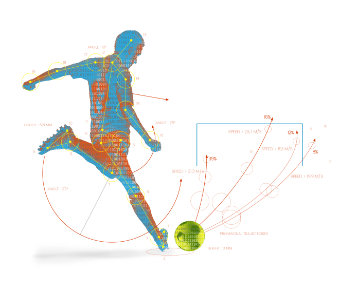

Driven by my passion for football and its evolving complexities, which have started to be broken down with the rise of data
in the sport, I successfully developed an approach to predict the next attacking action in a football match by applying LSTM
and Transformer neural networks. This project, leveraging StatsBomb Open Data, uses information from different
in-game matches of different teams, like formation, positions, location of actions as well as others to
correctly predict the next action of a team with the ball.

In this project, the PAMAP2 dataset was analyzed to understand how different activities affect heart rate and physical intensity,
using data from sensors attached to subjects performing various activities. The study aimed to identify relationships between specific
attributes and develop a predictive model to assess activity levels, potentially leading to a marketable product. Despite efforts including
hypothesis testing and various modeling techniques like linear and logistic regression, the models showed modest predictive performance,
with the best outcomes from logistic regression.
This project is an in-depth investigation into factors influencing patients' likelihood of missing medical appointments.
The analysis incorporates data manipulation and exploration techniques to uncover insights from patient data. Key factors such as waiting times,
weekdays, and patient demographics are scrutinized to understand their impact on appointment attendance.
This project offers a comprehensive view into the dynamics of appointment no-shows and potential strategies for improvement.
The project delves into the Cyclistic dataset to differentiate usage patterns between annual members and casual riders.
It utilizes R for data cleaning, transformation, and analysis. Key aspects include investigating ride durations, popular stations,
and peak usage times, with a strategic aim to transform casual riders into members. The analysis suggests targeted measures such
as adjusting pricing policies, optimizing promotional activities, and enhancing member benefits, especially during high-demand
periods and at key locations frequented by casual riders.
This project focuses on practicing data wrangling techniques using the @RateDogs Twitter archive. It involves gathering, assessing,
transforming, cleaning, visualizing, and analyzing data related to the humorous dog rating account. The project utilizes three
datasets: a CSV file of tweets, a TSV file of image predictions, and a TXT file with additional tweet data. The datasets were merged
after cleaning and used for analysis, revealing insights such as correlations between retweets and favorites, popularity of dog breeds,
and engagement trends among followers. The project highlights data wrangling skills applied to social media content analysis.